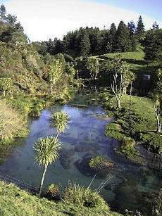

君よ知るや南の国
ハミルトン近郊のスプリングクリークにて、
レインボートラウトのフライフィッシング
皆様、こんにちは。ニュージーランドはハミルトンからお届けします「君よ知るや南の国」です。寒波、大雪の日本だそうですが、いかがおすごしでしょうか？
今回は、ハミルトンから車で１～1.5時間ほど南に下った、南ワイカト地方のスプリングクリークでの虹鱒釣りをご紹介します。
この地方には、鱒釣りで有名なスプリングクリーク（湧水を水源とする小川）がいつくかあり、レインボートラウト、ブラウントラウトが棲息しています。水源となっている泉には、平野部に降った雨が地下に浸透した後、およそ50～100年を経てから湧出するため、これらの川の水温は年間を通じて13度前後と安定しています。さらに川底に繁茂する藻や、そこに棲んでいる水生昆虫、淡水のエビ、ザリガニなど、餌になる生物が豊富にあるため、鱒の生育に適した条件となっています。

私がよく通っている区間では、川幅およそ10m、水深は約30cm～1.5m程度で、平野部の牧場地帯をうねうねと蛇行しながら流れています。川底は粗い砂利と砂であり、一定の間隔で早瀬と淵とが交互に現れてきます。日本の渓流釣りに慣れた人からは、いったいどこがポイントなのか最初はとまどうかと思いますが、瀬の中のちょっとした深みや淵のアタマ、藻の背後など、ほんのわずかな変化の中に鱒たちは巧妙に潜んでいます。
これらのスプリングクリークでは、鱒の生息数はニュージーランドの平均値と比べてかなり多く、１kmあたり600尾程度という調査結果が出ています。ただ、限りある棲息空間と餌を多数の鱒が競争するため、１尾あたりの大きさは小さくなり、平均体長は25cm程度ではないかと思われます。このぐらいの大きさのレインボートラウトは、まだ体側にパーマークを残しており、一瞬ヤマメを釣ったかのような錯覚をするときがあります。でも、幾度と無く華麗なジャンプを見せるところはやはり野生のレインボーという気がします。また、大きな淵の底、藪に囲まれたポケットのような場所には、50cmを越す大物がひっそりと定位しているのをまれに見ることが出来ます。こうした大物は、フライを喰わせるまでが一苦労、ヒットしてから取り込むまでがさらに二苦労ぐらいあります。（笑）
こうしたスプリングクリークを初め、ニュージーランドの河川・湖沼では、規則によって釣り方が厳格に定められており、一般的に、上流部ではフライフィッシング、中流部ではフライ／ルアーフィッシング、下流部では餌釣りを含めた全ての釣り方が許可されています。
フライフィッシングの場合、一般にはドライフライ（水面に浮く毛針を用いる）、あるいはニンフ（鉛線などを巻き込み、水中に沈めて使う毛針）を使いますが、大物狙いではストリーマーも用いられます。
フライは、解禁当初の早期にはアダムス、ブルーダンなどのナチュラルな系統のフライ、夏場にはビートル（陸棲の甲虫）、カディス（トビケラを模したフライ）が、よく釣れるような気がします。秋口の釣りはまだ経験してないのでわかりません。（笑）地元の釣具店で、あるいは川で出会う釣り人に聞いてみるのが一番良いと思います。
タックルは、ラインが５番～４番クラスで地味な色のもの、リールはそのラインと50cmほどのバッキングが収納でき、ドラグ性能の良いもの、ロッドの長さは8ft～9ftあたりが最も使い勝手が良いでしょう。ロッドは、ニンフの釣りや岸沿いの草むらを考慮すると、ある程度長さがあったほうが釣りやすいと思います。まれに50cmを越す大物がかかることを考えると、バット部分（竿の手元近く）がしっかりしたロッドが欲しいのですが、普段釣れる鱒はそんなに大きくないのである程度柔らかめのロッドの方が釣り味は良いと思います。
ティペット（ハリス）も選択が難しいのですが、水は限りなく透明で流れは複雑なのでできるだけ細いのを使いたい.....しかし大物も釣れることがある.......となると４Ｘあたりに落ち着くと思います。５Ｘでも、普通の状況なら大丈夫でしょうが、仮に大物が掛かって、藻の中に突っ込まれたときのことを考えるといささか不安になります。 日本の渓流釣りの感覚からはかなり太いと思われる３Ｘのティペットでも、うまくフライを流すことができれば案外すんなり喰ってくることが多いです。
普通、ニュージーランドの鱒釣りというと、サイトフィッシング（川岸を静かに歩きながら鱒の姿を探し、見つけた魚を狙う）というイメージがあるかと思いますが、南ワイカトのスプリングクリークでは、魚が比較的小さくて見つけにくいことと、魚の数が多いことから、日本の渓流釣りのように、それらしいポイントを探りながら釣り上がってゆくことができます。しかし、晴天・無風の天気で、魚も食い気たっぷり、そこかしこに水生昆虫の羽化と鱒のライズが見られるような状況下では、大物の魚影、大物らしきモジリを探し、慎重に狙いを定めて毛針を投げ入れる......という緊張感あふれるサイトフィッシングを楽しむことができます。
一面の牧草地、草をはむ羊たち、透き通った青空、流れる白い雲の下、どこまでも静かに、おだやかに流れてゆくスプリングクリークの中で、かなたの鱒をめざして毛針を振る夕暮れは、私にとって、おそらく多くの釣り人にとって無条件に幸福になれるひと時だと思います.......
次回は、これまでの釣行日誌のなかから、スプリングクリークの釣りの実際、愚行の数々をご紹介いたします。（笑）
では、寒さ厳しい日本ですが、皆様どうぞお体にお気をつけて下さい。
君よ知るや南の国 目次へ
サイトマップ
ホームへ
お問い合わせ